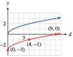
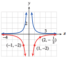
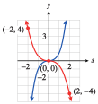
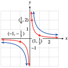
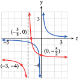
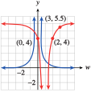
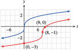

Exercises 2.9 Homework 2.3
¶In Problems 1–6, identify the graph as a translation of a basic function, and write a formula for the graph.


For Problems 7–18,
Describe how to transform one of the basic graphs to obtain the graph of the given function.
Using guidepoints, sketch the basic graph and the graph of the given function on the same axes. Label the coordinates of three points on the graph of the given function.
7.
\(f(x)=\abs{x}-2 \)
Translate \(y =\abs{x}\) by \(2\) units down.

8.
\(g(x)=(x+1)^3 \)
9.
\(g(s)=\sqrt[3]{s-4} \)
Translate \(y =\sqrt[3]{s} \) by \(4\) units right.

10.
\(f(s)=s^2+3 \)
11.
\(F(t)=\dfrac{1}{t^2}+1 \)
Translate \(y =\dfrac{1}{t^2} \) by \(1\) unit up.

12.
\(G(t)=\sqrt{t-2} \)
13.
\(G(r)=(r+2)^3 \)
Translate \(y =r^3 \) by \(2\) units left.

14.
\(F(r)=\dfrac{1}{r-4} \)
15.
\(H(d)=\sqrt{d}-3 \)
Translate \(y =\sqrt{d} \) by \(3\) units down.
- 
16.
\(h(d)=\sqrt[3]{d}+5 \)
17.
\(h(v)=\dfrac{1}{v+6} \)
Translate \(y =\dfrac{1}{v} \) by \(6\) units left.

18.
\(H(v)=\dfrac{1}{v^2}-2 \)
For Problems 19-22, identify the graph as a stretch, compression, or reflection of a basic function, and write a formula for the graph.


For Problems 23–32,
Identify the scale factor for each function and describe how it affects the graph of the corresponding basic function.
Using guidepoints, sketch the basic graph and the graph of the given function on the same axes. Label the coordinates of three points on the graph of the given function.
23.
\(f(x)=\dfrac{1}{3}\abs{x} \)
Scale factor \(\frac{1}{3} \text{;}\) \(y =\abs{x}\) is compressed vertically by the scale factor.

24.
\(H(x)=-3\abs{x} \)
25.
\(h(z)=\dfrac{-2}{z^2} \)
Scale factor \(-2 \text{;}\) \(y =\frac{1}{z^2}\) is reflected over the \(z\)-axis and stretched vertically by a factor of \(2\text{.}\)
- 
26.
\(g(z)=\dfrac{2}{z} \)
27.
\(G(v)=-3\sqrt{v} \)
Scale factor \(-3 \text{;}\) \(y =\sqrt{v}\) is reflected over the \(v\)-axis and stretched vertically by a factor of \(3\text{.}\)

28.
\(F(v)= -4\sqrt[3]{v} \)
29.
\(g(s)=\dfrac{-1}{2}s^3 \)
Scale factor \(\frac{-1}{2} \text{;}\) \(y =s^3 \) is reflected over the \(s\)-axis and compressed vertically by a factor of \(\frac{1}{2}\text{.}\)
- 
30.
\(f(s)=\dfrac{1}{8}s^3 \)
31.
\(H(x)=\dfrac{1}{3x} \)
Scale factor \(\frac{1}{3} \text{;}\) \(y =\frac{1}{x} \) is compressed vertically by the scale factor.
- 
32.
\(h(x)=\dfrac{-1}{4x^2} \)
In Problems 33 and 34, match each graph with its equation.
33.

\(f(x)=3\sqrt{x} \)
\(f(x)=2x^3 \)
\(f(x)=\dfrac{x}{3} \)
\(f(x)=\dfrac{3}{x} \)
\(f(x)=2\sqrt[3]{x} \)
\(f(x)=3x^2 \)
vi
ii
iv
i
v
iii
34.

\(f(x)=x^3-2 \)
\(f(x)=\sqrt[3]{x}+2 \)
\(f(x)=\dfrac{1}{(x-3)^2} \)
\(f(x)=\abs{x}-3 \)
\(f(x)=x^2+3 \)
\(f(x)=\sqrt{x-3} \)
In Problems 35–38, the graph of a function is shown. Describe each transformation of the graph; then give a formula for each in terms of the original function.
35.

Vertical stretch by a factor of \(3\text{:}\) \(y = 3 f (x)\)
Reflection about the \(x\)-axis: \(y = -f (x)\)
Translation \(1\) unit right: \(y = f (x - 1)\)
Translation \(4\) units up: \(y = f (x) + 4\)
36.

37.

Reflection about the \(v\)-axis and vertical stretch by a factor of \(2\text{:}\) \(T = -2h(v)\)
Vertical stretch by a factor of \(3\text{:}\) \(T = 3h(v)\)
Translation \(3\) units up: \(T = h(v) + 3\)
Translation \(3\) units left: \(T = h(v + 3)\)
38.

In Problems 39–42, each table in parts (a)–(d) describes a transformation of \(f (x)\text{.}\) Identify the transformation and write a formula for the new function in terms of \(f\text{.}\)
39.
| \(x\) | \(~~1~~\) | \(~~2~~\) | \(~~3~~\) | \(~~4~~\) | \(~~5~~\) | \(~~6~~\) |
| \(f(x)\) | \(8\) | \(6\) | \(4\) | \(2\) | \(0\) | \(2\) |
\(~~x~~\) \(~~1~~\) \(~~2~~\) \(~~3~~\) \(~~4~~\) \(~~5~~\) \(~~6~~\) \(y\) \(10\) \(8\) \(6\) \(4\) \(2\) \(4\) \(~~x~~\) \(~~1~~\) \(~~2~~\) \(~~3~~\) \(~~4~~\) \(~~5~~\) \(~~6~~\) \(y\) \(4\) \(2\) \(0\) \(-2\) \(-4\) \(-2\) \(~~x~~\) \(~~1~~\) \(~~2~~\) \(~~3~~\) \(~~4~~\) \(~~5~~\) \(~~6~~\) \(y\) \(4\) \(3\) \(2\) \(1\) \(0\) \(1\) \(~~x~~\) \(~~1~~\) \(~~2~~\) \(~~3~~\) \(~~4~~\) \(~~5~~\) \(~~6~~\) \(y\) \(10\) \(8\) \(6\) \(4\) \(2\) \(0\)
Translation \(2\) units up: \(y = f (x) + 2\)
Translation \(4\) units down: \(y = f (x) - 4\)
Vertical compression by a factor of \(\frac{1}{2} \text{:}\) \(y = \frac{1}{2}f (x)\)
Translation \(1\) unit right: \(y = f (x - 1)\)
40.
| \(x\) | \(~-3~\) | \(~-2~\) | \(~-1~\) | \(~~0~~\) | \(~~1~~\) | \(~~2~~\) |
| \(f(x)\) | \(13\) | \(3\) | \(-3\) | \(-5\) | \(-3\) | \(3\) |
\(x\) \(~-3~\) \(~-2~\) \(~-1~\) \(~~0~~\) \(~~1~~\) \(~~2~~\) \(y\) \(-26\) \(-6\) \(6\) \(10\) \(6\) \(-6\) \(x\) \(~-3~\) \(~-2~\) \(~-1~\) \(~~0~~\) \(~~1~~\) \(~~2~~\) \(y\) \(18\) \(8\) \(2\) \(0\) \(2\) \(8\) \(x\) \(~-3~\) \(~-2~\) \(~-1~\) \(~~0~~\) \(~~1~~\) \(~~2~~\) \(y\) \(-3\) \(-5\) \(-3\) \(3\) \(13\) \(27\) \(x\) \(~-3~\) \(~-2~\) \(~-1~\) \(~~0~~\) \(~~1~~\) \(~~2~~\) \(y\) \(2.6\) \(0.6\) \(-0.6\) \(-1\) \(-0.6\) \(0.6\)
41.
| \(x\) | \(~-2~\) | \(~-1~\) | \(~~0~~\) | \(~~1~~\) | \(~~2~~\) | \(~~3~~\) |
| \(f(x)\) | \(-9\) | \(-8\) | \(-7\) | \(-6\) | \(1\) | \(20\) |
\(~~x~~\) \(~-2~\) \(~-1~\) \(~~0~~\) \(~~1~~\) \(~~2~~\) \(~~3~~\) \(y\) \(-34\) \(-9\) \(-8\) \(-7\) \(-6\) \(1\) \(~~x~~\) \(~-2~\) \(~-1~\) \(~~0~~\) \(~~1~~\) \(~~2~~\) \(~~3~~\) \(y\) \(-4\) \(21\) \(22\) \(23\) \(24\) \(31\) \(~~x~~\) \(~-2~\) \(~-1~\) \(~~0~~\) \(~~1~~\) \(~~2~~\) \(~~3~~\) \(y\) \(18\) \(16\) \(14\) \(12\) \(-2\) \(-40\) \(~~x~~\) \(~-2~\) \(~-1~\) \(~~0~~\) \(~~1~~\) \(~~2~~\) \(~~3~~\) \(y\) \(8\) \(6\) \(4\) \(2\) \(-12\) \(-50\)
Translation \(1\) unit right: \(y = f (x - 1)\)
Part (a) is translated \(30\) units up: \(y = f (x - 1) + 30\)
\(f\) is reflected about the \(x\)-axis and stretched vertically by a factor of \(2\text{:}\) \(y = -2 f (x)\)
Part (c) is translated \(10\) units down: \(y = -2 f (x) - 10\)
42.
| \(x\) | \(~~1~~\) | \(~~2~~\) | \(~~3~~\) | \(~~4~~\) | \(~~5~~\) | \(~~6~~\) |
| \(f(x)\) | \(60\) | \(30\) | \(20\) | \(15\) | \(12\) | \(10\) |
\(x\) \(~~1~~\) \(~~2~~\) \(~~3~~\) \(~~4~~\) \(~~5~~\) \(~~6~~\) \(y\) \(30\) \(15\) \(10\) \(7.5\) \(6\) \(5\) \(x\) \(~~1~~\) \(~~2~~\) \(~~3~~\) \(~~4~~\) \(~~5~~\) \(~~6~~\) \(y\) \(35\) \(20\) \(15\) \(12.5\) \(11\) \(10\) \(x\) \(~~1~~\) \(~~2~~\) \(~~3~~\) \(~~4~~\) \(~~5~~\) \(~~6~~\) \(y\) \(-12\) \(-6\) \(-4\) \(-3\) \(-2.4\) \(-2\) \(x\) \(~~1~~\) \(~~2~~\) \(~~3~~\) \(~~4~~\) \(~~5~~\) \(~~6~~\) \(y\) \(-10\) \(-4\) \(-2\) \(-1\) \(1.4\) \(0\)
For Problems 43-50, write the function in the form \(y = kf(x)\text{,}\) where \(f (x)\) is one of the basic functions. Describe how the graph differs from that of the basic function.
43.
\(y=\dfrac{1}{2x^2} \)
\(y = \dfrac{1}{2}\cdot\dfrac{1}{x^2}\) is a vertical compression with factor \(dfrac{1}{2} \) of \(y = \dfrac{1}{x^2}\text{.}\)
44.
\(y=\sqrt{9x} \)
45.
\(y=\sqrt[3]{8x} \)
\(y = 2\sqrt[3]{x}\) is a vertical stretch with factor \(2 \) of \(y = \sqrt[3]{x}\text{.}\)
46.
\(y=\dfrac{1}{4x} \)
47.
\(y=\abs{3x} \)
\(y = 3\abs{x}\) is a vertical stretch with factor \(3 \) of \(y = \abs{x}\text{.}\)
48.
\(y=\left(\dfrac{x}{2}\right)^2 \)
49.
\(y=\left(\dfrac{x}{2}\right)^3 \)
\(y = \dfrac{1}{8}x^3 \) is a vertical compression with factor \(\dfrac{1}{8} \) of \(y = x^3\text{.}\)
50.
\(y=\abs{\dfrac{x}{5}} \)
For Problems 51–62,
The graph of each function can be obtained from one of the basic graphs by two or more transformations. Describe the transformations.
Sketch the basic graph and the graph of the given function by hand on the same axes. Label the coordinates of three points on the graph of the given function.
51.
\(f(x)=2+(x-3)^2 \)
Translation by \(2\) units up and \(3\) units right

52.
\(f(x)=(x+4)^2+1 \)
53.
\(g(z)=\dfrac{1}{z+2}-3 \)
Translation by \(2\) units left and \(3\) units down.
- 
54.
\(g(z)=\dfrac{1}{z-1}+1\)
55.
\(F(u)=-3\sqrt{u+4}+4 \)
Reflection across the \(u\)-axis, vertical stretch by a factor of \(3\text{,}\) translation by \(4\) units left and \(4\) units up

56.
\(F(u)=4\sqrt{u-3}-5 \)
57.
\(G(t)=2\abs{t-5}-1 \)
Vertical stretch by a factor of \(2\text{,}\) translation by \(5\) units right and \(1\) down

58.
\(G(t)=2-\abs{t+4} \)
59.
\(H(w)=6-\dfrac{2}{(w-1)^2} \)
Reflection across the \(w\)-axis, vertical stretch by a factor of \(2\text{,}\) translation by \(6\) units up and \(1\) unit right
- 
60.
\(H(w)=\dfrac{3}{(w+2)^2}-1 \)
61.
\(f(t)=\sqrt[3]{t-8}-1 \)
Translation by \(8\) units right and \(1\) unit down
- 
62.
\(f(t)=\sqrt[3]{t+1}+8 \)
In Problems 63 and 64, each graph can be obtained by two transformations of the given graph. Describe the transformations and write a formula for the new graph in terms of f.
63.

Translation by \(4\) units up and \(1\) unit right: \(y = f (x - 1) + 4\)
Vertical stretch by a factor of \(2\) and a translation by \(4\) units up: \(y = 2 f (x) + 4\)
64.
For Problems 65–70,
Describe the graph as a transformation of a basic function.
Give an equation for the function shown.
65.

\(y =\abs{x}\) translated by \(1\) unit left and \(2\) units down
\(y =\abs{x+1} - 2\)
66.

67.
\(y =\sqrt{x}\) reflected about the \(x\)-axis and shifted \(3\) units up
\(y =-\sqrt{x} +3\)
68.

69.

\(y =x^3\) translated by \(3\) units right and \(1\) unit up
\(y =(x - 3)^3 + 1\)
70.
71.
The graph of \(f (x)\) shows the number of students in Professor Hilbert's class who scored \(x\) points on a quiz. Write a formula for each transformation of \(f\) ((a) and (b) of the figure below); then explain how the quiz results in that class compare to the results in Professor Hilbert's class.


\(y = f(x - 20)\text{:}\) Students scored \(20\) points higher than Professor Hilbert's class.
\(y = 1.5 f(x)\text{:}\) The class is about \(50\%\) larger than Hilbert's, but the classes scored the same.
72.
The graph of \(f(x)\) shows the number of men at Tyler College who are \(x\) inches tall. Write a formula for each transformation of \(f\) ; then explain how the heights in that population compare to the Tyler College men.


73.
The graph of \(f (x)\) shows the California state income tax rate, in percent, for a single taxpayer whose annual taxable income is \(x\) dollars. Write a formula for each transformation of \(f\text{;}\) then explain what it tells you about the income tax scheme in that state.


\(y = f (x - 5000)\text{:}\) Taxpayers earn $\(5000\) more than Californians in each tax rate
\(y = f (x) - 0.2\text{:}\) Taxpayers pay \(0.2\%\) less tax than Californians on the same income.
74.
The graph of \(f (w)\) shows the shipping rate at SendIt for a package that weighs \(w\) pounds. Write a formula for each transformation of \(f\) and explain how the shipping rates compare to the rates at SendIt.


75.
The graph of \(g(t)\) shows the population of marmots in a national park \(t\) months after January 1. Write a formula for each transformation of \(g\) and explain how the population of that species compares to the population of marmots.


\(y = g(t + 2)\text{:}\) This population has its maximum and minimum two months before the marmots.
\(y = g(t) - 20\text{:}\) This population remains \(20\) fewer than that of the marmots.
76.
The graph of \(f (x)\) is a dose-response curve. It shows the intensity of the response to a drug as a function of the dosage \(x\) milligrams administered. The intensity is given as a percentage of the maximum response. Write a formula for each transformation of \(f\) and explain what it tells you about the response to that drug